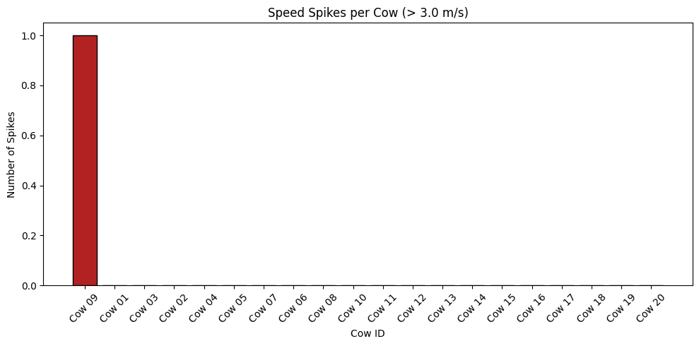
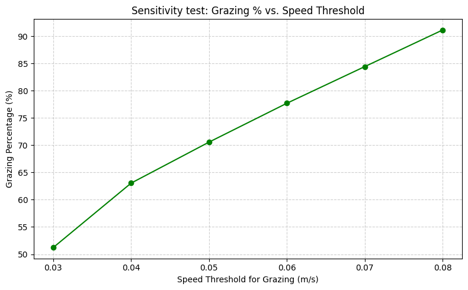

#flag spikesSPEED_SPIKE_THRESHOLD =3.0# m/sdf["is_speed_spike"] = df["speed_m_s"] > SPEED_SPIKE_THRESHOLD#count spikes per cow spike_counts = ( df.groupby("cow_id")["is_speed_spike"] .sum() .reset_index(name="spike_count") .sort_values("spike_count", ascending=False))#Cows with a spikeprint("Cows with biologically implausible speed spikes (> 3.0 m/s):")display(spike_counts[spike_counts["spike_count"] >0])plt.figure(figsize=(10, 5))plt.bar(spike_counts["cow_id"], spike_counts["spike_count"], color="firebrick", edgecolor="black")plt.title("Speed Spikes per Cow (> 3.0 m/s)")plt.xlabel("Cow ID")plt.ylabel("Number of Spikes")plt.xticks(rotation=45)plt.tight_layout()plt.show()
Cows with biologically implausible speed spikes (> 3.0 m/s):
cow_id
spike_count
8
Cow 09
1

Code
#grazing speeds to simulatethresholds = [0.03, 0.04, 0.05, 0.06, 0.07, 0.08]grazing_sensitivity = []for t in thresholds: grazing_flag = df["speed_m_s"] <= t grazing_pct = grazing_flag.mean() *100 grazing_sensitivity.append({"threshold": t, "grazing_pct": grazing_pct})#convert to DataFrame for plottinggrazing_sensitivity_df = pd.DataFrame(grazing_sensitivity)#plotplt.figure(figsize=(8, 5))plt.plot( grazing_sensitivity_df["threshold"], grazing_sensitivity_df["grazing_pct"], marker="o", color="green")plt.title("Sensitivity test: Grazing % vs. Speed Threshold")plt.xlabel("Speed Threshold for Grazing (m/s)")plt.ylabel("Grazing Percentage (%)")plt.grid(True, linestyle='--', alpha=0.6)plt.tight_layout()plt.show()

SQL:
Code
import duckdb#Load CSVduckdb.sql(""" CREATE VIEW cow_tracking AS SELECT * FROM '../data/simulated_cow_data.csv'""")#Grazing efficiencydf_kpi = duckdb.sql(""" SELECT cow_id, DATE(timestamp) AS date, COUNT(*) AS total_rows, COUNT(*) FILTER (WHERE is_grazing) AS grazing_rows, ROUND(100.0 * COUNT(*) FILTER (WHERE is_grazing) / COUNT(*), 2) AS grazing_percent FROM cow_tracking GROUP BY cow_id, DATE(timestamp)""").df()df_kpi.head()